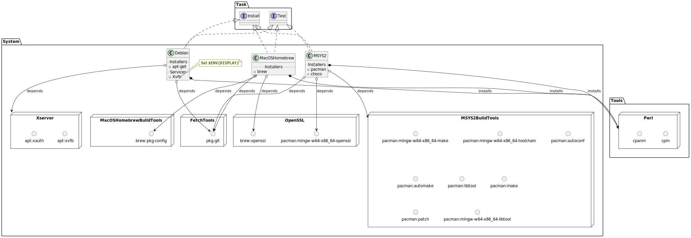

Bootstrapping
- Current
- Setup for CI
- e.g., for GitHub Actions
- Download and eval shell script
- Sets several environment variables. TODO Need to check if these variables are script specific or used within the bootstrapping process.
- Setup for Docker
- Dockerfile
- Packages needed to fetch repos (VCS): https://github.com/orbital-transfer/launch-site/blob/master/maint/docker-debian-packages
- Bootstrap
- config:
- Install directory
- global install: no directory specified (so installs to
perl -V:sitelib) - CI install: in
~/.orbital.- Only when $ENV{CI} is true
- default: relative to launch-site repo
- global install: no directory specified (so installs to
- Install directory
- steps:
- Install
cpm(from vendor submodules) if not available - Install
cpanmusingcpm. - Install
App::scan_prereqs_cpanfileusingcpanm. - Generate a
cpanfilefor every orbital-transfer submodule. - Install dependencies from
cpanfilefor every orbital-transfer submodule usingcpmthencpanm.
- Install
- Setup for CI
- Future
- config:
- Install to directory, upload to GitHub
- upload to GitHub for cacheing
- Install to directory at bootstrap time
- determine the directory to install to using a class
- Install to directory, upload to GitHub
- steps: same as before
- Perhaps need to generate cpanfile in each repo, only install and run
App::scan_prereqs_cpanfileifcpanfilemissing.
- Perhaps need to generate cpanfile in each repo, only install and run
- decreasing deps:
- Need to outline a set of modules that are pure-Perl or can be translated to pure-Perl equivalents.
- Some of these can be installed as the base dependencies of all the Orbital::Payload::* modules.
- Others need to be set up to be installed based on context:
- e.g., if loading on GitHub actions, then load everything needed there
- Create a way of specifying features that require different sets of modules in a distribution.
- Use a loader function to look up the features needed by a module and install if necessary.
- Need to have a context for installation and loading which holds the directories for bootstrapping.
- config:
Workflow
Current
Diagram

Outline
- Have two tasks:
- Install
- Test
- What do these tasks do:
- Determine the platform
- Platforms:
- Debian + apt,
- macOS + Homebrew,
- Windows + MSYS2.
- Platforms:
- Set up environment for everything (task: Install, Test).
- Not great... this is specific to project-renard. It downloads the test data and sets an environment variable.
- Each platform has a
_installmethod (task: Install).- Debian + apt: Install
xvfb xauth. - macOS + Homebrew:
- Update Homebrew if needed (in non-CI environments). This is necessary because Homebrew can be slow to update and this slows down the CI. This might not be needed with newer versions of Homebrew.
- Remove old Python:
python@2to clean up a pre-installed package. This is (was?) specific to GitHub CI and was causing a conflict with Python 3. - [SKIPPED] Installing
xquartz. This might have been for an older version ofgtk+3. Note that this requires adding a tap to install a cask. Good thing it isn't needed now but being able to use a Homebrew tap is still important. - Install
pkg-config. Often needed for finding the libraries. - Install openssl.
- Windows + MSYS2:
- Prepare MSYS2:
- Disable
CheckSpaceoption forpacman. Checking the disk space takes time in the CI. This speed up is also used by the GitHub action https://github.com/msys2/setup-msys2. - Update mirror list. This was needed at some point to fix the update because the mirror was down. Need to look more into this as this was a hot fix at the time.
- Run pacman update, then
- Update also requires killing processes that use
msys-2.0.dll. This is the same as what installers of tools like Chocolatey and the aforementioned GitHub Action do. - Install
pacman-mirrors. - Install
git. Needed for below when fetching repos. - There was a (now disabled) work around to update GCC9.
- Update also requires killing processes that use
- Disable
- Install build tools using pacman.
- Install openssl package using pacman.
- Copy
gcctoccandmingw32-maketogmake. Not sure if this is needed anymore. This makes Perl XS builds happy. - Create
C:\tmpforData::UUID. Not fixed yet! - Install Perl. Fixes
pl2batbecausepl2bat.batisn't there. Installscpanm,cpm, and some basic Perl modules. Includes my own patches tocpmto help it work in parallel (not ready for upstream). Not great as this is Perl specific and really should be part of non-platform code. Who did this?! Oh, right.
- Prepare MSYS2:
- Debian + apt: Install
- Each platform has a
_pre_runmethod (task: Install, Test)- Debian + apt:
- Start the
Xvfbsever. Note that the reason whyXvfbis also needed for the Install task is that runningdzil listdepsordzil buildneeds a display because withproject-renard/curie, these commands load the code. It runs Gtk3's init on loading the module! This is a bad design, but worth working around just to prove that it can be worked around. RunDISPLAY= perl -MDevel::Hide=Gtk3 -S dzil listdepsto see the issues. This is also why errors while building occur when these modules have not yet been installed in the CI environment. A very unsensible arrangement.
- Start the
- macOS + Homebrew: no-op.
- Windows + MSYS2: no-op.
- Debian + apt:
- Each platform has an environment (task: Install, Test)
- Debian + apt: sets
DISPLAYto theXvfbstarted above. - macOS + Homebrew:
- This environment depends on the Homebrew prefix.
- Adds to
PKG_CONFIG_PATH: openssl, libffi - Adds to
PATH: openssl, gettext. - Sets
ARCHFLAGS: This has something to do with using a macOS system Perl. Might not be needed with Homebrew. Bad idea to use the macOS system Perl anyway.
- Windows + MSYS2:
- Set
MSYSTEM: default is MINGW64. - Set
PATH: to the default paths for that MSYSTEM. - Set
MSYS2_FC_CACHE_SKIP: skip font cache forfontconfigpackage. - Add hack that modifies Perl linking for EUMM: yikes! This isn't even in the same project! Boo this code!!!
- Set
ALIEN_BUILD_PKG_CONFIGto preferPkgConfig::CommandLine: This should probably be upstream.
- Set
- Debian + apt: sets
- For each repo to install via depth-first walk (task: Install):
- Get the repos using
git. Note thatgitis already installed in most environments (except MSYS2 in the CI so that is why the_installfor MSYS2 step installsgit. - Install all the "native" dependencies of the repos first, then install the repos.
- Each platform has an
install_packagesmethod to install the "native" packages (task: Install)- Debian + apt:
- Check if all needed packages are already installed.
- Otherwise
apt-get update. - Then
apt-get install. - Includes a hack to install
mesonviapip3. This is because the version of Meson in the specific Debian container used is too old. I would like to support this somehow for flexibility purposes. But not here. Not like this... not like this. This will actually break with newer systems due to howpip3is now set up using anexternally-managed-environmentunder PEP 668.
- macOS + Homebrew:
- Disable auto update. See above in
_installfor why this was slow on older Homebrew's. - Check if
fontconfigis a dependency. If it is, use a hack to skip the font cache generation post-install step. Terrible. But the hack is still needed. brew installany packages that are not already installed. Ignore errors by using|| true. Alas!
- Disable auto update. See above in
- Windows + MSYS2:
- Uses Chocolatey and Pacman! Wait, I thought this was just Pacman for MSYS2! The horror! I believe this is for one specific thing which was to get testing of Anki working on Windows (because there is no way Anki is going to be installed via an MSYS2 package as the focus is on developer tools).
- Debian + apt:
- Install the repo itself (task: Install)
- Right now this is only for Perl distributions.
- via
Orbital::Payload::Env::Perl->apply_roles_to_repo. - More coupling! Cut the knot!
- via
- There is some caching here.
$repo->install.
- Right now this is only for Perl distributions.
- Get the repos using
- Test the main repo (task: Test).
$repo->run_test.
- Determine the platform
Future
TODO
Outline
- Fetch repos:
- current repo is used as is
- Fetching dependencies have have several strategies
- if have
git- Have metadata to repo elsewhere on FS
- if repo is
gitand havegit, can usegit worktree
- if repo is
- else
git clone
- Have metadata to repo elsewhere on FS
- else
- fetch over HTTP using host specific tarball?
- if have
Workflow graph
- Task
- Something that can be run.
exec()calls- code
- Can succeed or fail.
- A future?
- Has dependencies.
- Has inputs / outputs
- Can be variables (e.g., parameters), directories, files
- Outputs: stdout/stderr
- Dependency graph:
- e.g., Task B depends on A.output0
- Tasks can have a mergeable role.
- Tasks can have a retryable role.
- Tasks can have subtasks?
- A graph of subtasks?
- Can have specialised tasks for CIs
- e.g., on GitHub Actions, this would indicate which OS the task is running on
- Something that can be run.
- Resources
- lockable / mutex
- Some resources can only be accessed for writing by one task at a time, e.g., installing CPAN modules to a library directory, running apt-get.
- lockable / mutex
- Scheduling
- Workflow graph
- DAG
- Maybe in the future use strongly connected components to do condensation of any directed graph?
- DAG
Task::Apt::Install- Definition of
Task::Apt::Installapt-get install [-y] [package-list]- where
-yoption is boolean and optional. - where
package-listoption is array and required.
- where
- Given two tasks of type
Task::Apt::Install,- Mutually exclusive: can not run multiple instances of
Task::Apt::Installat the same time since they all require access to thedpkglock.- note: the reason they are mutually exclusive should not be limited to just because they are the same type — we should look at the resources they are trying to lock
- Mergeable: if the options other than
package-listare the same, then they can be merged by merging the arrays ofpackage-list.
- Mutually exclusive: can not run multiple instances of
- Definition of
- Package (or Pkg)
- An installable unit.
- What gets installed varies by package type (different packaging
management systems).
- e.g., libfoo on one system might be equivalent to separate libfoo and libfoo-dev packages on another
- perhaps be able to identify categories of files installed
- work with pkg-config to find
-Iand-L
- work with pkg-config to find
- Has dependencies.
- Dependencies should be resolvable.
- define data declaratively
- it can be updated
- it can be modeled
- it does not have code
- bug trackers / submission
- Data
- RDF model?
- provides graph
- easy serialisation
- existing ontologies
- DOAP
- https://en.wikipedia.org/wiki/DOAP
- https://github.com/ewilderj/doap
- SPDX
- https://spdx.dev/
- https://spdx.dev/spdx-examples-repo/
- https://github.com/spdx/tools-python
- CycloneDX
- DOAP
- link up with security advisories
- CVE, Debian, etc.
- About - cve-search - tool-set to perform local searches for known vulnerabilities
- Vulnerability APIs
- https://stackoverflow.com/questions/37526701/cve-details-api-get-vulnerabilities-by-component
- https://cve.mitre.org/cve/data_feeds.html
- https://www.opencve.io/welcome
- have modules provide RDF representation?
- see also the old Moose + Semantic Web work
- can track provenance of data
- which graph it came from
- was it entered via a tool or manually
- maybe tie data changes to a commit?
- Need to model command line tools
- See PaSh https://binpa.sh/
- https://nikos.vasilak.is/p/pash:osdi:2022.pdf
- https://arxiv.org/pdf/2012.15422.pdf
- can this be used to provide completion?
- sub-commands
- type-aware (getopt types, paths, etc.)
- see zsh, bash completion
- PowerShell ISE
- Modeling should include version numbers and different specs (input, output, etc.) for different versions of a software.
- See PaSh https://binpa.sh/
- RDF model?
Organisation of project
- Payload:
- Env (for Environment):
- Language
- DB (e.g., PostgreSQL, MySQL)
- XWindows
- Sys (for System):
- Operating system
- Package management system
- Serv (for Service):
- Usually a web service
- e.g., GitHub, Sourceforge, Bitbucket, AppVeyor, Travis CI, Coveralls, Codecov
- VCS: version control system
- git, bzr, svn, cvs, etc.
- Env (for Environment):
- database
pkg/: packages. These can be from source (for FOSS code) or binary-only (for proprietary code).- e.g.,
pkg/gui/gtk3- inside of this create definitions such as
use Orbitalfile -api => v1; def_pkg { meta { type 'library'; homepage 'https://www.gtk.org/'; vcs 'git', { uri 'git@gitlab.gnome.org:GNOME/gtk.git', protocol => 'ssh'; uri 'https://gitlab.gnome.org/GNOME/gtk.git', protocol => 'https'; }; vcs 'git', { type => 'mirror'; uri 'https://github.com/GNOME/gtk.git', protocol => 'https'; }; bug_tracker 'https://gitlab.gnome.org/GNOME/gtk/-/issues'; }; requires env('c'); provides env('c')->library('gtk3') { header_file('gtk/gtk.h', type => 'main'); pkg_config 'gtk+-3.0'; }; def apt('libgtk-3-0') { # implied to apply to all versions of apt package # version '*'; requires dist('debian') | dist('ubuntu'); provides os('linux')->shared_library; }; def apt('libgtk-3.0-dev') { requires dist('debian') | dist('ubuntu'); provides env('c')->headers; }; def homebrew('gtk+3') { requires os('macos'); provides os('macos')->shared_library; provides env('c')->headers; } }
- inside of this create definitions such as
- e.g.,
pkg/perl/Gtk3for https://p3rl.org/Gtk3- depends on
pkg/gui/gtk3with feature :glib-introspection
- depends on
- Need a mapper from external packages to database.
- e.g.,
CPANPackage($Name) -> Pkg('main:pkg/perl/$Name') - must be overrideable: in case a fork needs to be used or in the example of Perl, an https://p3rl.org/Alt module.
- e.g.,
- e.g.,
sys/: os package manager + distribution- e.g., sys/os/{windows,linux,macos}
- e.g., sys/dist/{debian,ubuntu}, sys/dist/fedora
- e.g., sys/dist/{msys2,chocolatey}
- for GitHub Actions, should use https://github.com/msys2/setup-msys2
- e.g., sys/dist/{homebrew,fink,macports}
- e.g.,
sys/arch/{intel,arm}
env/: language {perl,python,go}- env/perl/dist/Strawberry
- have specialised data on how to install in different contexts (e.g., using GitHub Actions https://github.com/shogo82148/actions-setup-perl)
- env/python/dist/Anaconda
- env/perl/dist/Strawberry
role/: BLAS-interface, LAPACK-interface, XWindows-server, SQL-server, web-browser- e.g., BLAS: https://www.mpi-magdeburg.mpg.de/projects/flexiblas, https://github.com/JuliaLinearAlgebra/libblastrampoline.
- with variants for index-32, index-64
- some need Fortran, C, or C++
- e.g., SSLeay, OpenSSL (fork of SSLeay), LibreSSL (fork of OpenSSL), wolfSSL (has OpenSSL compatibility interface)
- e.g., role/server/xwindows: provided by Xorg, Xephyr, Xvfb
- e.g.,
role/interface/gstreamer/{plugin,decoder,source,sink}:- provided inside of several packages
- can use metadata (such as that available on Debian e.g.,
Gstreamer-Decoders)
- OpenGL version? Extensions https://www.khronos.org/opengl/wiki/OpenGL_Extension.
- language compiler support? C99, C11, C++03, C++11, etc.?
- e.g., BLAS: https://www.mpi-magdeburg.mpg.de/projects/flexiblas, https://github.com/JuliaLinearAlgebra/libblastrampoline.
- databases should be layered:
- p5-Orbital-Transfer-Database distributes core database with OS, Language, Architecture files
- actually stored in
orbital-transfer-database/core
- actually stored in
orbital-transfer-database/maincontains database with packages such aspkg/gui/gtk3.
- p5-Orbital-Transfer-Database distributes core database with OS, Language, Architecture files
CI of project modules
- Pull from
launch-site. - For every repo in {
GITHUB_SHA,cpanfile-git} andlaunch-site/vendor/, checkout the version of that repo.
Roadmap
- Query Orbital package database (can be specified using URL).
- Query Sys/Env package database.
- Package database (can be specified using URL):
- Env::Python
- PyPI
- local PyPI mirror
- Env::Perl
- CPAN (via MetaCPAN)
- local DarkPAN
- .deb: Debian apt, Ubuntu PPA
- Env::Python
- Package database (can be specified using URL):
- Directory can be specified as local FS or remote URL.
- Query dependencies for directory.
- Need language-specific scanner.
- Read from meta files.
- List platforms supported.
- REPL for working with objects
- Tasks
- Install package
- Test package
- Timing for tasks
- Given a repository and a set of plugins for that repository:
- Find the matching GitHub repository for each remote
- if plugin {Coveralls,Travis,GitHub CI}, then use that GitHub name to find matching provider of metadata
- e.g., for issues on GitHub, by default use the GitHub issues provider if they are enabled.
- There may be other providers for example with a CPAN module, there could be issues at rt.cpan.org.
- Find the matching GitHub repository for each remote
- File pattern matching
- Include + Exclude
- See
- Add repositories
- Debian
- https://www.virtualbox.org/wiki/Linux_Downloads
- https://www.hashicorp.com/blog/announcing-the-hashicorp-linux-repository
- https://docs.docker.com/engine/install/
- https://github.com/cli/cli#installation
- NVIDIA CUDA, container toolkit, etc.
- https://docs.ansible.com/ansible/latest/collections/ansible/builtin/apt_repository_module.html
- Debian